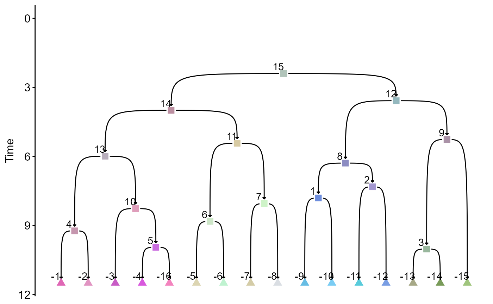
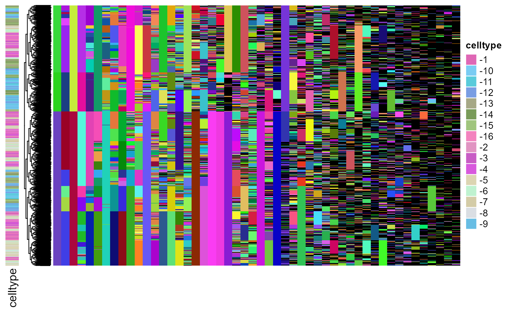

Simulating cell phylogeny and lineage barcodes from QFM
Weixiang Fang
2022-11-23
simulate_phylogeny_and_barcodes.RmdWe take one fate map from our previously constructed panel as an example.
library(qfm)
# load the panel of fate maps
tree_panel = readRDS("../data/example/tree_panel.rds")
type_graph = tree_panel$type_graph[[5]]First, we generate a color scheme and visualize the topology and commitment times.
col_vec = gr_color_v1(type_graph)
plot_type_graph_clean_mod2(type_graph,
node_col_mapper = function(x) col_vec[x],
show_node_text = T)
Next, we load lineage barcoding parameters that involve 50
independent barcoding sites. Using this data, we simulate cell phylogeny
and lineage barcodes, sampling 100 cells from each terminal cell types.
In order to sample a different number of cells from each type, a named
numeric vector can be provided to the sample_size
argument.
mut_p = readRDS("../data/example/mut_p_marc1.rds")
sim_data = simulate_sc_data_mod2(type_graph, mut_p = mut_p, sample_size = 100)## [1] 1044
## [1] 704
## [1] 478
## [1] 321
## [1] 210
## [1] 130
## [1] 78
## [1] 48
## [1] 30
## [1] 18
## [1] 12
## [1] 8
## [1] 5
## [1] 3
## [1] 2
## [1] 1The results involve the cell phylogeny sim_data$tr, the
lineage barcodes sim_data$sc, and the sampled population
size for each progenitor states
sim_data$true_sampled_sizes. The barcodes and phylogeny can
be visualized below. The rownames of the lineage barcode character
matrix indicates the cell type of each cell.
plot_barcodes(sc_mat = sim_data$sc,
tr = sim_data$tr,
tip_celltype = get_type_from_id(rownames(sim_data$sc)),
celltype_col = col_vec)
For a detailed specifications of fate maps and mutation parameters, see below.
Quantitative fate maps specifications
Quantitative fate maps are implemented as the ‘type_graph’ S3 objects, with the following attributes.
- ‘node_id’: progenitor states. Progenitor states are represented by positive integers.
- ‘root-id’: root state. Root state is one of the progenitor states represented by the largest positive integer.
- ‘tip_id’: terminal types. Terminal types are represented by negative integers.
- ‘merge’: list of daughter state(s)/type(s) for each progenitor state.
- ‘diff_time’: time of progenitor state commitments. Terminal types have infinite time of commitment.
- ‘diff_mode_probs’: commitment bias of progenitor states. Values corresponds to three modes of commitments: symmetric to downstream state X (first element in ‘merge’), symmetric to downstream states Y (second element in ‘merge’) and assymetric commitment.
- ‘lifetime’: the doubling time of cells of each state/type.
- ‘founder_size’: the number of cell(s) of the root state at time zero.
- ‘target_time’: time of sample collection.
- ‘prob_loss’: cell death probabilities for each state/type.
- ‘prob_pm’: non-doubling proabilities for each state/type.
- ‘edges’: edge list. This can be derived from the information above.
- ‘root_time’: time until first commitment event of the root state.
Mutagenesis parameters specifications
mutatgenesis parameters are implemented as ‘mut_params’ S3 objects, and have the following attributes.
Suppose the array of barcoding sites have total elements.
- ‘mut_rate’: A vector of length , that is the mutation rate of the sites.
- ‘recur_prob’’: A vector of length , deprecatad parameter, always set to a vector of ones.
- ‘active time’’: A list of range of intervals for which barcoding is active.
- ‘recur_vec_list’: A list of allele emergence probabilities of length , each item in the list is a named vector probabilities that sum to . The names are the mutant allele names.